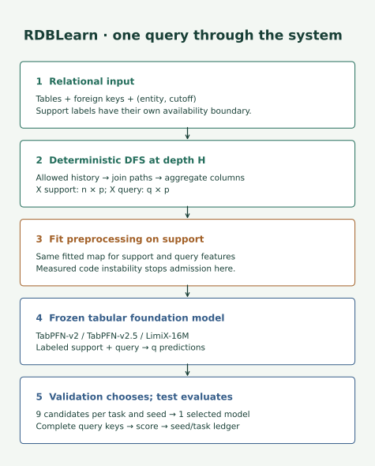
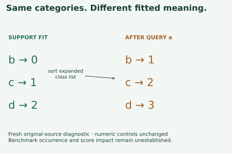
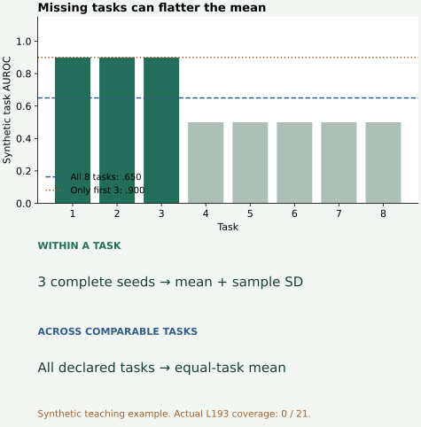

A result table that keeps every task
One skill: report a multi-task experiment without letting missing runs, incompatible units or selection decisions disappear inside an average. Read the core in about 15 minutes; do the notebook separately.
1 · From one task to a task set¶
Our mission is to test whether relational structure adds value. A good result on one convenient task cannot carry that claim across databases. Lesson 192's setup work chose RDBLearn and inspected one task. Here we keep the same paper and released pipeline, but expand the contract to every reported task. L192 completed its setup audit, while model inference remained blocked. Its single-task protocol and saved preprocessing audit motivated the fresh L193 check that forms the bridge here.
Retrieve first: What identifies a temporal query? Which split chooses a model? What does another support seed replicate?
Check after answering
A complete key includes entity and cutoff; the same entity can recur. Validation selects a configuration. Another support seed repeats within-task sampling; it does not create another independent database.
Lesson 178 introduced this relational-features-plus-tabular-model approach. Lesson 190 separated evidence from a research claim. Today's new difficulty is accounting: the denominator is part of the experiment.
2 · Model architecture: where the shared risk lives¶
RDBLearn turns related rows into a fixed-width table, then supplies examples and queries to a pretrained tabular predictor. The relational feature generator has no learned encoder weights. The backend weights stay frozen during in-context prediction; fitting support/preprocessing is still data-dependent. Depth and backend are selected on validation. See the primary paper, §§3–5.


Read one path: a query is (entity, cutoff) → restrict reachable rows to the allowed history → aggregate along join paths → produce one feature vector → apply the fitted preprocessing map → predict using labeled support. Support labels must also be available by the relevant prediction time. This is the intended contract; the drawing does not certify the released pipeline's temporal validity.
Predict: if preprocessing changes a fitted category's code after seeing a new query category, can every task safely reuse that pipeline?
We freshly ran the original full preprocessor on synthetic inputs. Fitting categories b,c,d gives codes 0,1,2. Introducing a produces a sorted class list a,b,c,d, so the same known categories become 1,2,3. The frozen support matrix still contains the earlier codes. The same query b is encoded differently alone and beside a.


This establishes a source preprocessing invariant failure under the recorded environment. It does not establish how often real tasks encounter the condition, how a backend reacts, or whether a paper score changes. We stop the declared suite at this shared admission check. Patching the encoder and claiming the original experiment would change the protocol. Fresh observations · original-source diagnostic.
3 · Freeze the whole experiment before measuring¶
The chosen target is RDBLearn, arXiv 2602.18495v1, Tables 1–3: eight RelBench classification tasks, eight RelBench regression tasks and five 4DBInfer classification tasks. The full scope is the RDBLearn column; retraining every comparator or pretraining the tabular backends is outside it. Paper §5 and Appendix A.
For each task and each course seed 0,1,2, search depths 2,3,4 × backends TabPFN-v2, TabPFN-v2.5, LimiX-16M. Keep the published 10,000-example support cap and official splits. Three repeatability seeds are a disclosed extension: the original seeds are not recovered. Source release 0.1.2 and FastDFS 0.2.1 are pinned; checkpoint bytes, full data identities and the historical environment remain unestablished.
Count it: 21 × 3 × 9 = 567 validation candidates, then 21 × 3 = 63 selected test evaluations. A failed candidate is not permission to select among eight. A missing seed is not permission to report a two-seed result as three-seed reproduction.
def choose_config(rows,order,metric):
"""Require the complete declared candidate set; use validation only, stable ties."""
if metric not in ['AUROC','MAE'] or not order or len(set(order))!=len(order):
raise ValueError('Invalid metric or candidate order')
scores={}
for row in rows:
value=row['score']
if row['split']!='val' or row['id'] in scores or not math.isfinite(value):
raise ValueError('Duplicate, nonfinite or non-validation candidate')
if value<0 or (metric=='AUROC' and value>1):raise ValueError('Invalid score')
scores[row['id']]=value
if set(scores)!=set(order):raise ValueError('Incomplete candidate set')
direction=-1 if metric=='AUROC' else 1
return min(order,key=lambda name:direction*scores[name])
The function refuses incomplete candidate sets and test-split scores. It breaks equal validation scores using the order frozen before execution. Classification maximizes AUROC; regression minimizes MAE. Fresh scoring would align complete query identities and independently recalculate metrics before admitting any COMPLETE row.
Admission and budget: $10 total, planned stop at $8 with $2 reserve, including preparation, retries and verification. The full-run forecast remains NOT_ESTABLISHED: the source gate failed before a model pilot. No paid run was launched. The executable admission operator exits with a documented stop; its downstream GPU executor is not implemented or validated. The full validation schedule and test schedule remain available for continuation.
4 · Two denominators before one mean¶
First summarize within each task over its complete seed set. Then summarize across tasks within a comparable metric group. These are different sources of variation. For synthetic seed scores [0.60,0.70,0.80], the mean is 0.70 and sample SD is 0.10, using denominator 3−1. A missing third run leaves the full-seed mean blank. Seed SD is not uncertainty across databases.


The browser exercise below is synthetic. Its eight task scores are [.9,.9,.9,.5,.5,.5,.5,.5]. Each checked box stands for a task with all three seeds complete. Start with only the three easy tasks. The observed-subset mean is .900; restoring all eight gives .650. Dropping difficult tasks creates a more flattering answer to a different question.
Equal task weighting: average each task's seed mean once. Do not pool every prediction row; large tasks would dominate. Tasks within one database may also be dependent, so an across-task SD is descriptive rather than a database-transfer confidence interval.
Units matter: AUROC is dimensionless. Raw MAEs for money, counts and rates are not commensurate. Given verified baseline errors b_t, normalized MAE is MAE_t / b_t, then averaged across tasks. Example: errors [5,.2] and baseline errors [10,.1] yield normalized errors [.5,2], mean 1.25. The smaller raw error can be worse relative to its baseline.
The paper's §5 describes normalization using a no-relational-context baseline, but Table 2 labels its values MAE and does not supply an unambiguous normalization recipe and denominators. The AutoGluon-without-RDB column is not automatically that baseline. We retain raw per-task targets and leave aggregate regression parity NOT_ESTABLISHED. The lab rejects missing or nonpositive denominators rather than silently substituting a target standard deviation.
5 · The full results table, including absence¶
| Task | Metric | Paper target | Fresh mean ± SD | Coverage |
|---|---|---|---|---|
| relbench/rel-amazon/item-churn | AUROC | 0.8188 | — NOT_RUN | 0/3 seeds |
| relbench/rel-amazon/user-churn | AUROC | 0.6823 | — NOT_RUN | 0/3 seeds |
| relbench/rel-avito/user-clicks | AUROC | 0.6709 | — NOT_RUN | 0/3 seeds |
| relbench/rel-avito/user-visits | AUROC | 0.6569 | — NOT_RUN | 0/3 seeds |
| relbench/rel-hm/user-churn | AUROC | 0.6802 | — NOT_RUN | 0/3 seeds |
| relbench/rel-stack/user-badge | AUROC | 0.8430 | — NOT_RUN | 0/3 seeds |
| relbench/rel-stack/user-engagement | AUROC | 0.8935 | — NOT_RUN | 0/3 seeds |
| relbench/rel-trial/study-outcome | AUROC | 0.7167 | — NOT_RUN | 0/3 seeds |
| relbench/rel-amazon/item-ltv | MAE | 48.5044 | — NOT_RUN | 0/3 seeds |
| relbench/rel-amazon/user-ltv | MAE | 14.5290 | — NOT_RUN | 0/3 seeds |
| relbench/rel-avito/ad-ctr | MAE | 0.0341 | — NOT_RUN | 0/3 seeds |
| relbench/rel-event/user-attendance | MAE | 0.2393 | — NOT_RUN | 0/3 seeds |
| relbench/rel-hm/item-sales | MAE | 0.0630 | — NOT_RUN | 0/3 seeds |
| relbench/rel-stack/post-votes | MAE | 0.0676 | — NOT_RUN | 0/3 seeds |
| relbench/rel-trial/site-success | MAE | 0.4179 | — NOT_RUN | 0/3 seeds |
| relbench/rel-trial/study-adverse | MAE | 44.5186 | — NOT_RUN | 0/3 seeds |
| 4dbinfer/amazon/churn | AUROC | 0.7777 | — NOT_RUN | 0/3 seeds |
| 4dbinfer/outbrain/ctr-100k | AUROC | 0.5499 | — NOT_RUN | 0/3 seeds |
| 4dbinfer/retailrocket/cvr | AUROC | 0.8609 | — NOT_RUN | 0/3 seeds |
| 4dbinfer/stackexchange/post-upvote | AUROC | 0.8736 | — NOT_RUN | 0/3 seeds |
| 4dbinfer/stackexchange/user-churn | AUROC | 0.8774 | — NOT_RUN | 0/3 seeds |
Every row retains the published target beside a blank fresh result. The paper numbers are reference scalars; they are not saved predictions or fresh measurements. For compactness, the table shows one task row; the run ledger retains all 63 seed slots and reasons. Every row has the same suite-level stop reason, not an asserted task-specific defect.
Arithmetic on the rounded published classification values gives 0.7452875 over the eight RelBench tasks and 0.7879000 over the five 4DBInfer tasks. We independently parsed and checked all 21 table entries. Those two means reproduce a calculation on printed numbers, not the experiments that generated them; seed variance cannot be recovered from these single scalars.
Actual fresh model evaluations: 0 / 630. Actual completed task results: 0 / 21. The diagnostic is complete; full model reproduction is INCOMPLETE_SOURCE_PREPROCESSING_GATE. Report · independent verification.
6 · Implement, challenge, defend¶
Student notebook · executed solution · readable lab · field guide.
Implement three live contracts: choose_config, summarize_task, aggregate_suite. Each feeds the checks or complete packet report. Reject a test-split candidate; mark one seed missing; try averaging two regression tasks without their denominators. The portable replay authenticates evidence and recomputes the report without downloading models. It replays recorded diagnostic observations; the original-source diagnostic is a separate environment-dependent command.
EXIT: write a paragraph containing (1) the named 21-task target, (2) the strongest completed evidence, (3) the precise reason model inference stopped, (4) the denominator and uncertainty you would report after a valid complete run, and (5) what must be established before continuation. Explain why fixing the encoder creates a new experimental variant. Lesson 194 turns this ledger into a per-task analysis and report; blank scores cannot support win/loss attribution.
Ask the tutor about any unclear step, or submit your implementation and defense for review. This prepared package does not establish learner mastery: PENDING_WRITTEN_DEFENSE.